This guide describes wörds 0.9.0, an earlier version. Guide for the latest version (0.12.0) · Earlier versions: 0.11.1, 0.11.0, 0.10.0
wörds user guide
wörds is a flashcard app for the parts of a language that need daily practice: verb forms and everyday words. Each card shows one side. You answer in your head, flip the card, check yourself honestly and grade it. wörds then works out when you should see the card again.
wörds works offline, needs no account and shows no ads. It comes with Italian for German speakers (A1 verbs and 120 everyday words); more language packs can be added from a file or from GitHub.
This guide describes wörds 0.9.0. The screenshots show the Terracotta color scheme; your app may use other colors.
Contents
Getting started
On first start wörds installs its built-in content and asks what you want to learn. Choose a language pair and tap Let's go. You can install more pairs later and switch between them at any time.
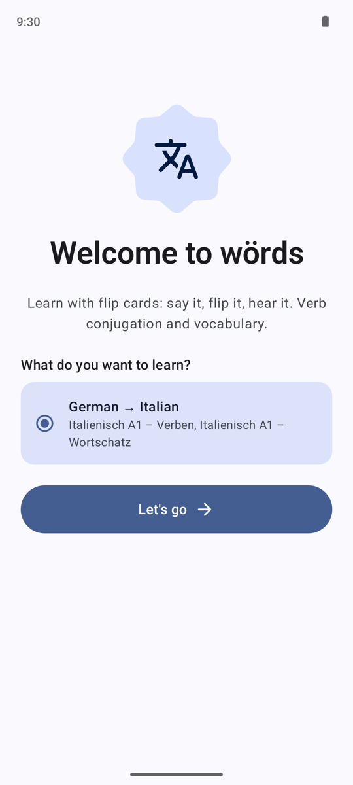
The app has three areas, always reachable from the bar at the bottom (on tablets: at the side):
| Area | What it is for |
|---|---|
| Library | Browse the content and start a session |
| Progress | Today's review and what you have learned so far |
| Settings | Language, colors, pronunciation, daily review, language packs |
The library
The library shows everything you can learn in the current language pair. The row of chips at the top switches between the installed packs, for example Verben (verb conjugation) and Wortschatz (vocabulary). Each pack is divided into sections (lessons), and each section into items: a verb with all its forms, or a word.
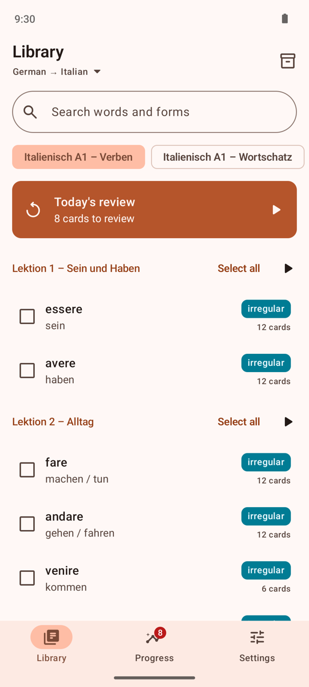
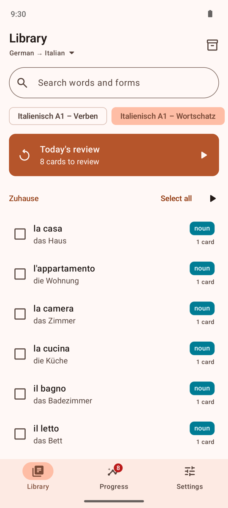
- Search finds words and verb forms in the selected pack.
- Today's review at the top starts or continues your daily review (see Today's review).
- Continue last session appears when a session is still open; it picks up exactly where you left off.
- The ▶ button next to a section starts that whole section.
- With two or more language pairs installed, tap the pair under the title to switch between them.
- The box icon at the top right opens the language packs.
To study only some items, tick them. Select all ticks a whole section; Clear at the top removes the selection. The button at the bottom shows how many items you have chosen.
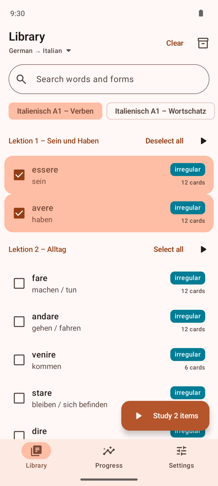
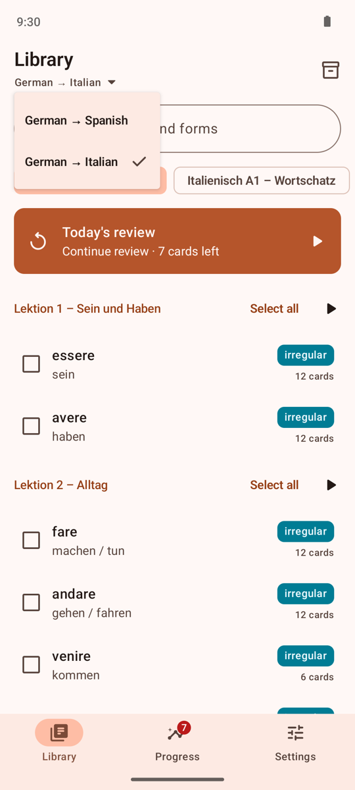
Starting a session
Before a session starts, a sheet lets you decide how to practise:
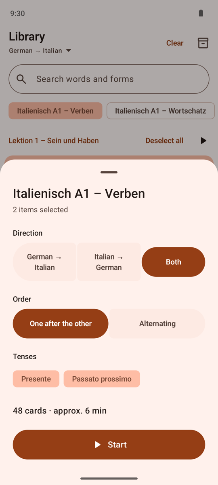
- Direction: from your language to the learned one (German → Italian: you are shown "ich bin" and say "io sono"), the other way round, or Both.
- Order (only with Both): One after the other practises all cards of an item in one direction, then in the other. Alternating asks each card in both directions in turn.
- Tenses (verbs only): choose which tenses to practise.
The sheet shows how many cards that makes and roughly how long it takes. Tap Start.
Studying a card
A card shows a prompt. Say or think the answer, then tap the card to flip it.
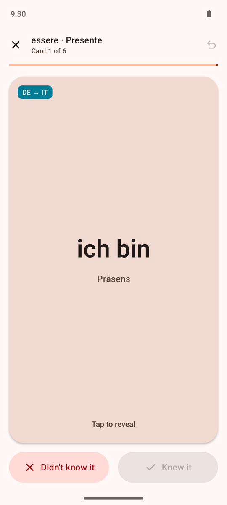
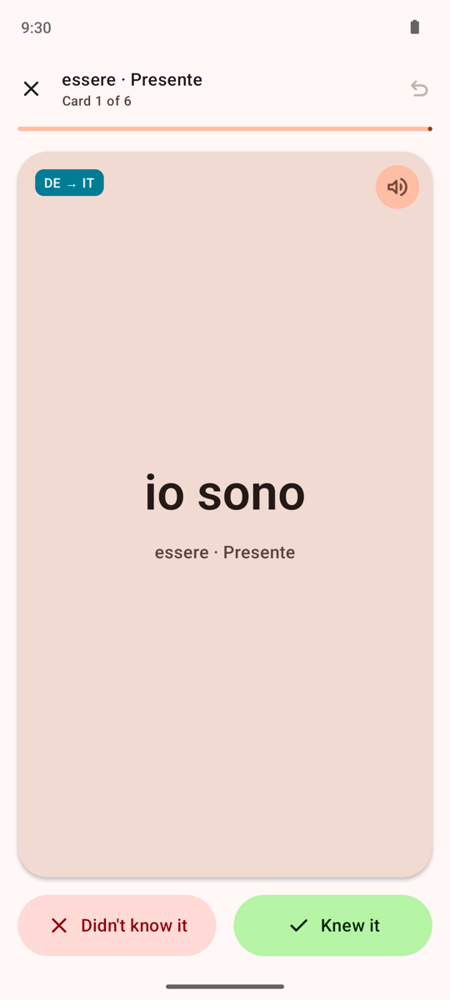
Then grade yourself:
- Knew it, or swipe the card to the right.
- Didn't know it, or swipe the card to the left.
Be honest: wörds plans your reviews from these answers. That is also why Knew it only becomes available once the answer is visible. If you tap Didn't know it before flipping, the card shows its answer first; tap Didn't know it again to move on.
More on the card screen:
- The speaker plays the pronunciation with your device's text-to-speech voice. If the voice for the language is missing, wörds offers to install it.
- Undo (the arrow at the top right, or the message at the bottom) takes back the last answer.
- The tag at the top left shows the direction, for example DE → IT.
- ✕ closes the session. It stays open, and you can continue it later from the library.
Vocabulary cards show the word, and on the answer side its article, plural and an example sentence where the pack has one. Many words of the built-in Italian pack also have a picture of their meaning. You can turn pictures off in the settings.
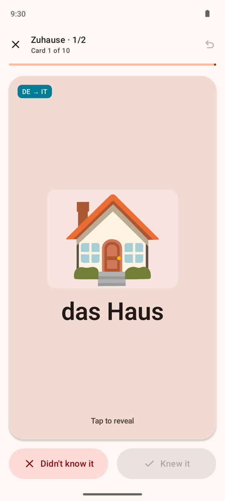
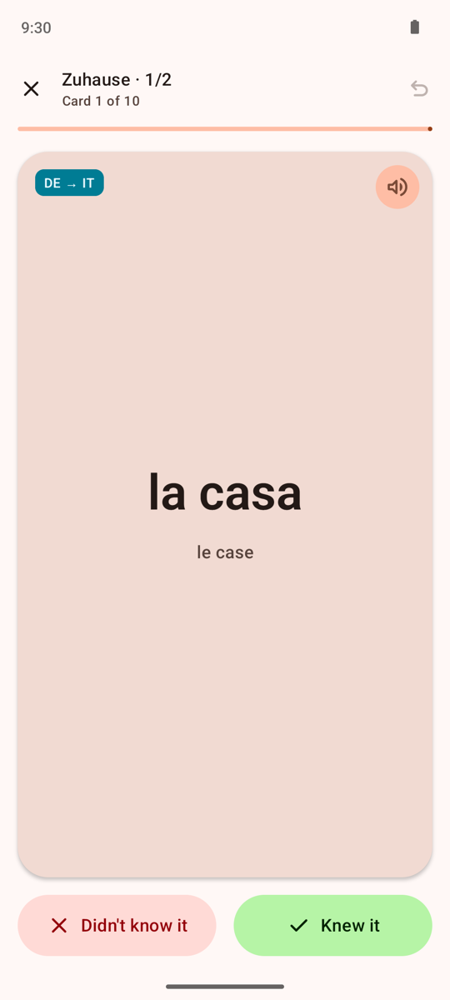
End of a session
A session is split into groups: one per verb and tense, or a handful of words. After each group wörds shows how it went and what comes next. At the end you see the result of the whole session.
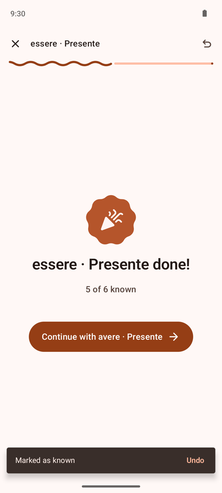
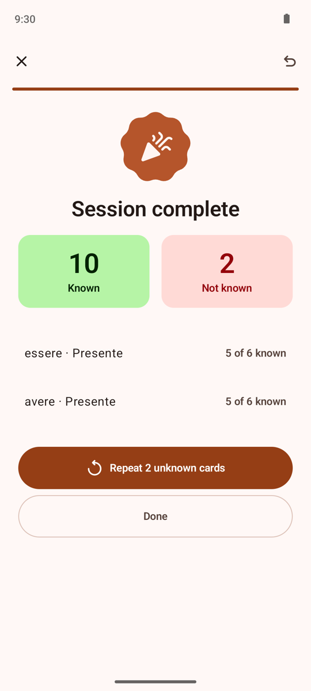
Repeat unknown cards starts a short session with just the cards you did not know. Done returns to the library.
Today's review
wörds uses spaced repetition: a card you know well comes back after a long break, a card you struggle with comes back soon. Behind this is FSRS, a modern scheduling method that estimates for each card how likely you are to still remember it.
Every day wörds puts together today's review:
- cards that are due, the ones you are most likely to forget first, and
- a few new cards from packs you have already started (20 a day unless you change it).
You start the review from the top of the library or from the Progress tab. A number on the Progress tab shows how many cards are waiting. Long reviews are split into blocks of 20 cards. A review you interrupt can be continued the same day. A review day starts at 4:00 in the morning, so a late evening session still counts for that day.
Every answer counts towards your schedule: in a normal session as well as in the review.
Progress
The Progress tab shows today's review and, for each pack, how far you have got. Tap a pack to see the same figures per section; within a section you can show its groups.
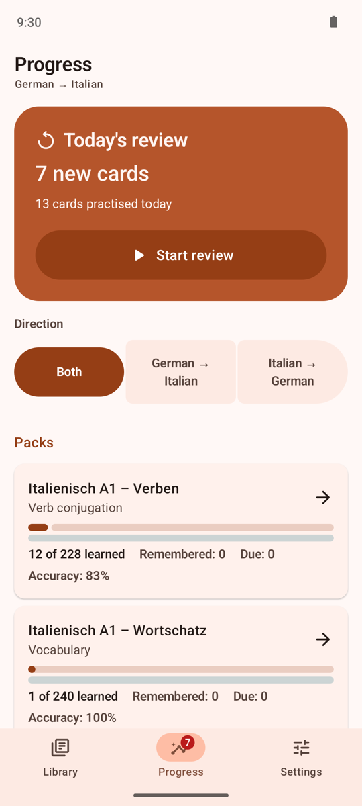
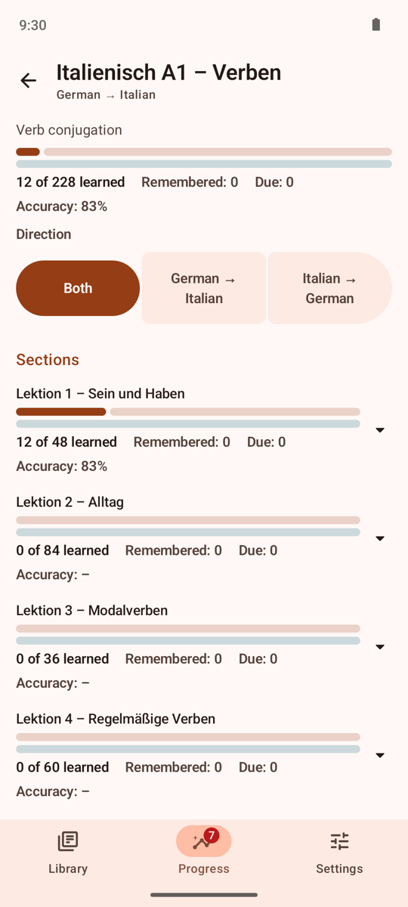
| Figure | Meaning |
|---|---|
| learned | Cards you have answered at least once |
| Remembered | Cards you would still know after three weeks or more |
| Due | Cards that are due for review now |
| Accuracy | Share of answers marked Knew it |
The Direction buttons show the figures for one direction or both.
Language packs
All content comes in language packs. Open them from the box icon in the library, or via Settings → Language packs.
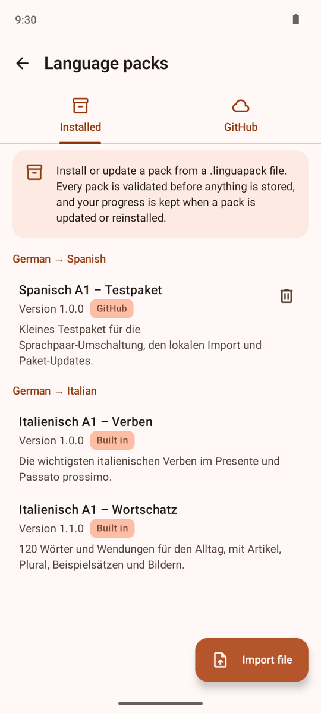
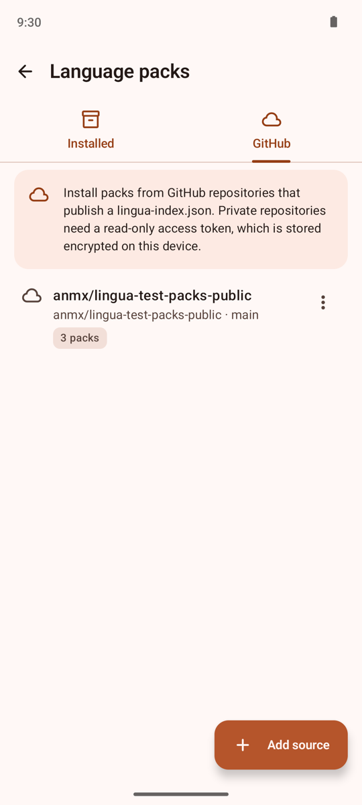
Installed lists your packs by language pair, with version and origin (Built in, Imported file or GitHub).
- Import file installs or updates a pack from a
.linguapackfile, for example from your downloads. - The bin icon removes a pack. Your learning progress is kept and comes back if you install the pack again. Built-in packs cannot be removed.
GitHub installs packs from GitHub repositories that publish a pack index (lingua-index.json):
- Tap Add source and enter the owner and name of the repository. You can also paste a GitHub link into the owner field. Branch and folder are optional.
- For a private repository, add a fine-grained access token with read-only access to that repository's contents. wörds stores it encrypted, with a key that never leaves your device. Showing, replacing or deleting a saved token requires your fingerprint, face or screen lock.
- Save. wörds shows the packs the repository offers. Tap Install.
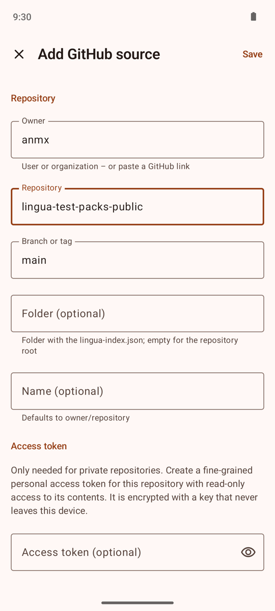
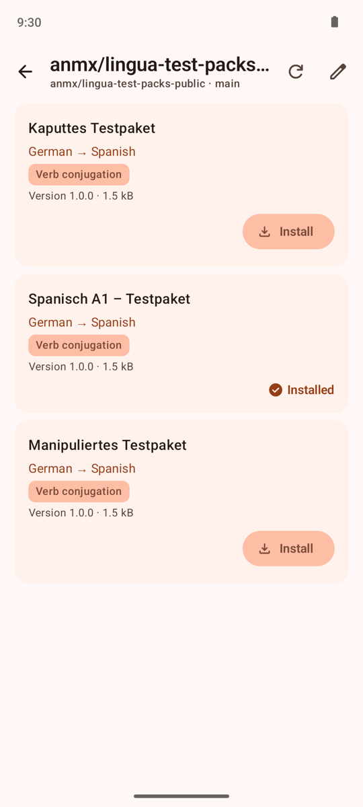
wörds checks once a day, on Wi-Fi, whether your sources have new versions, and shows Update where one is available. Large downloads continue in the background with a notification.
Every pack is checked before anything is stored. A damaged file, a pack that does not match its checksum or content that breaks the rules is rejected, and wörds tells you why. Nothing on your device changes in that case.
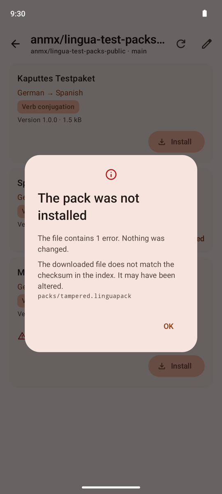
Settings
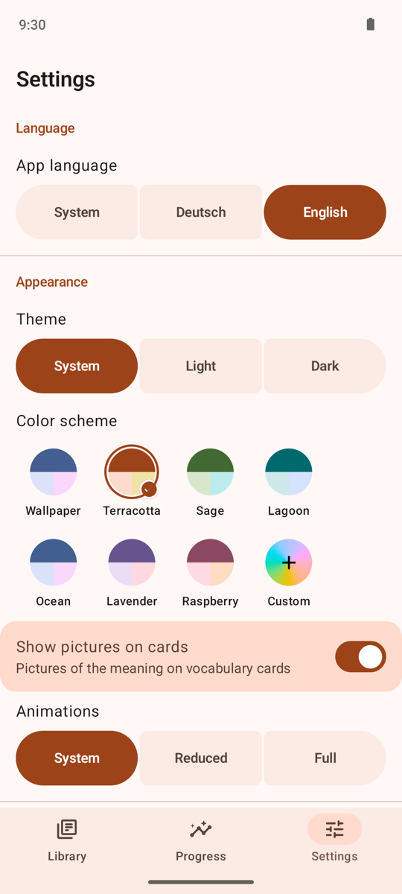
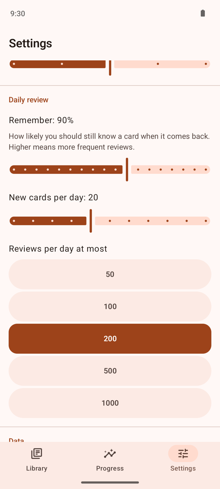
Language
- App language: follow the system, or always German or English.
Appearance
- Theme: light, dark, or as set on your device.
- Color scheme: the colors of your wallpaper (Android 12 and later), one of six schemes, or a color of your own. Colors follow the system's contrast setting (Android 14 and later).
- Show pictures on cards turns the pictures on vocabulary cards on or off.
- Animations: as set on your device, reduced, or full.
Pronunciation
- Play automatically speaks the answer when a card is flipped.
- Play … when shown speaks the learned language as soon as a card appears with it on the front.
- Speech rate makes the voice slower or faster.
Daily review
- Remember: how sure you want to be that you still know a card when it comes back (80 to 97 %, normally 90 %). Higher means more frequent reviews.
- New cards per day and Reviews per day at most limit how much each day's review contains.
Data
- Language packs opens the pack management.
- Reset learning progress deletes all answers and sessions. Installed packs stay. This cannot be undone.
About wörds
- Open-source licenses lists the libraries wörds is built with; tap one to read its license.
Custom color: pick a hue and colorfulness (or enter a hex code) and a style. The preview shows the result in light and dark.
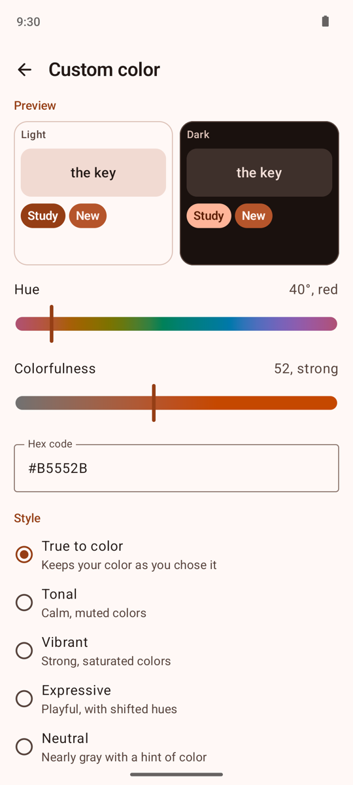
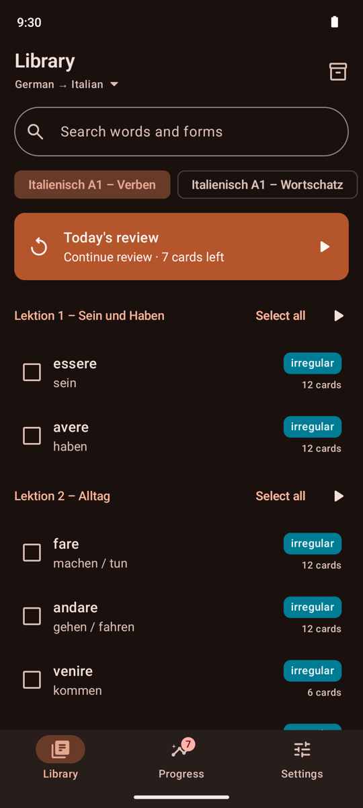
Tablets and foldables
On large screens the navigation moves to the side, and the GitHub sources show the list of sources and the packs of the selected source side by side. On a half-folded foldable (tabletop posture), the card sits above the fold and the grade buttons below it, so you can study with the device standing on a table.
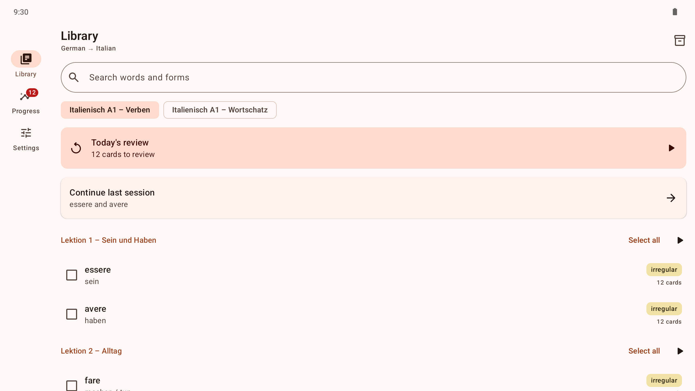
Accessibility and privacy
- wörds works with TalkBack, large text, high contrast, reduced motion, keyboards and D-pads. On a hardware keyboard, Esc goes back.
- wörds needs no account and works offline. It only goes online to talk to GitHub, and only when you use GitHub sources. There are no ads and no tracking.
- Your progress and settings are part of your device's backup. Access tokens are not: after a restore, wörds asks for them again.
Questions and problems
A card has no sound. Your device lacks the text-to-speech voice for the language. Tap Install in the message on the card, or add the voice in your device's speech settings.
A pack was not installed. The message says what is wrong with it. Nothing has been changed on your device. Ask the author of the pack for a corrected version.
GitHub reports an error. Check your connection. For a private repository, check that the access token has not expired and grants read access to the repository's contents. If GitHub's request limit has been reached, the message says when you can try again.
I want to start over. Settings → Reset learning progress deletes all answers; the packs stay installed.